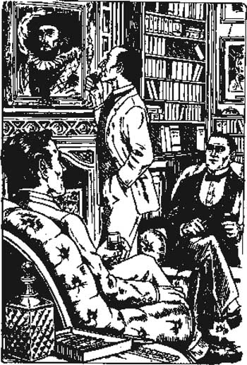

Listen to Part 1:
12

Đặt bẫy
‘Thưa ngài Sherlock Holmes’, ngài Henry Baskerville nói, ‘ngài đến thật bất ngờ! Hoan nghênh ngài đến toà Baskerville.’
‘Cảm ơn ngài’, Holmes nói. ‘Nhưng ngài đã không tuân theo lệnh của tôi. Tối qua ngài đã đi ra đồng hoang. Ngài đã gần bị ám sát!’
‘Nhưng tôi đâu có đi một mình’, ngài Henry nói. ‘Bác sĩ Watson đã đi cùng tôi. Ông ấy có súng lục để bảo vệ tôi.’
‘Và tôi cũng sẽ bảo vệ ngài’, Holmes nói. ‘Lần sau ngài đi ra đồng hoang vào ban đêm, cả bác sĩ Watson và tôi sẽ đi cùng ngài.’
‘Lần sau . . .’ ngài Henry bắt đầu nói.
‘Lần sau sẽ là ngày mai’, Holmes nói. ‘Bác sĩ Watson bảo với tôi rằng ngài sẽ đến nhà Merripit trên đồng hoang để dùng bữa tối. Tôi tin rằng gia đình Stapleton đã mời ngài.’
‘Đúng vậy’, ngài Henry nói. ‘Và bác sĩ Watson có nói với ngài rằng tôi muốn cưới cô Stapleton không?’
‘Có’, Holmes nói. ‘Bây giờ tôi muốn hỏi Barrymore một vài câu.’
Listen to Part 2:
Ngài Henry gọi người hầu của mình, Barrymore. Barrymore đến và đứng trước mặt chúng tôi. Sherlock Holmes nhìn ông ta một cách cẩn thận. Liệu đây có phải là người đàn ông có bộ râu đen mà chúng tôi đã thấy ở London không?
‘Hãy nói cho tôi biết về ngài Charles Baskerville’, Holmes nói với Barrymore. ‘Ông ấy có thường đi dạo vào ban đêm không?’
‘Thưa ngài’, Barrymore nói, ‘ngài Charles không thường ra khỏi nhà vào ban đêm.’
‘Nhưng vào cái đêm ông ấy mất, ông ấy đã đi dạo trên mép đồng hoang’, Holmes nói. ‘Chúng tôi biết ông ấy đã đứng cạnh cái cổng ở mép đồng hoang khoảng mười phút. Ông ấy có đang đợi ai không?’
‘Tôi không chắc, thưa ngài’, Barrymore nói. ‘Tôi nhớ rằng ngài Charles đã nhận được một lá thư vào ngày hôm đó.’
‘Một lá thư?’ Holmes hỏi. ‘Tại sao ông lại nhớ đến lá thư này? Ông có đọc nó không?’
‘Thưa không, ngài’, Barrymore nói. ‘Tôi chưa bao giờ đọc thư của ngài Charles. Nhưng ngài Charles thường để thư trên bàn làm việc của mình. Lá thư này không bình thường. Ông ấy đọc nó. Sau đó ông ấy ném nó vào lửa.’
‘Ồ, vậy là ông ấy đã đốt nó’, Holmes nói. ‘Có lẽ lá thư này bảo ông ấy gặp ai đó. Có lẽ ông ấy đã đến cuộc hẹn này và gặp ai đó – hoặc cái gì đó.’
‘Nhưng tại sao ngài Charles lại đốt lá thư?’ Tôi hỏi.
‘Tại sao mọi người lại đốt thư, Watson?’ Holmes hỏi. ‘Thường là vì họ có điều gì đó cần phải giấu. Nhưng ngài Charles lại sợ ra khỏi đồng hoang vào ban đêm. Bác sĩ Mortimer đã nói với chúng tôi rằng ngài Charles tin vào câu chuyện về Quái thú chó Baskerville. Tại sao ngài ấy lại đi ra đồng hoang, một mình, vào ban đêm? Nếu ông ấy định gặp ai đó, thì đó là người mà ông ấy quen biết. Nhưng tại sao lại gặp nhau ở mép đồng hoang? Liệu đó có phải là một cuộc gặp bí mật không?’
Listen to Part 3:
‘Ngài có nghĩ là ngài Charles đã bị một người bạn sát hại không?’ Tôi hỏi.
‘Tôi nghĩ ông ấy biết kẻ sát hại mình’, Holmes đáp. ‘Và tôi nghĩ kẻ sát hại ông ấy không ở đâu xa.’
Sau bữa tối, chúng tôi ngồi trong thư viện. Có những bức tranh về gia đình Baskerville treo trên tường. Một số bức tranh đã rất cũ.
Sherlock Holmes nhìn những bức tranh một cách cẩn thận. Ông ấy chú ý vào bức tranh vẽ ngài Hugo Baskerville, có niên đại là 1645.
‘Thú vị đấy, Watson, rất thú vị’, Holmes nói. ‘Đây là bức tranh của ngài Hugo, người bắt đầu câu chuyện về Quái thú chó Baskerville. Tôi có thể nhớ mặt người. Hãy nhìn bộ râu đen và khuôn mặt này. Ông đã thấy khuôn mặt này trước đây chưa?’
‘Đúng vậy, Holmes’, tôi nói. ‘Đó là khuôn mặt của người đàn ông mà chúng ta đã thấy ở London. Đó là người đàn ông đã theo dõi ngài Henry trên xe ngựa!’

Sherlock Holmes rất chú ý đến bức tranh vẽ
ngài Hugo Baskerville, có niên đại là 1645.
Mục lục
- Trang bìa
- Mục lục
- Ghi chú về truyện này
- Nhân vật trong truyện
- 1. Thám tử Sherlock Holmes
- 2. Lời nguyền nhà Baskerville
- 3. Vụ án
- 4. Ngài Henry Baskerville
- 5. Chiếc giày bị đánh cắp
- 6. Biệt thự Baskerville
- 7. Gia đình Stapleton ở Merripit House
- 8. Báo cáo đầu tiên của bác sĩ Watson
- 9. Ánh sáng trên vùng đất hoang
- 10. Người đàn ông trên vùng đất hoang
- 11. Nông trại High Tor
- 12. Đặt bẫy
- 13. Chó săn nhà Baskerville
- 14. Quay trở lại Phố Baker
- Điểm cần hiểu
- Danh sách các tác phẩm ở Cấp độ Sơ cấp
- Bản quyền